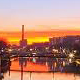
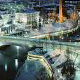

- Helsinki
- Helsinki on Suomen pääkaupunki ja Uudenmaan maakuntakeskus. Se sijaitsee Suomenlahden pohjoisrannalla Uudenmaan maakunnan keskiosassa. Helsinki on Suomen kulttuurillinen, hallinnollinen, poliittinen ja liike-elämän keskus, monen suuren yrityksen kotikaupunki ja maan suurin työnantaja. Kaupungin asukasluku on 622 240 ja Helsingin keskustaajaman väkiluku on 1 193 187, joten se on väkiluvultaan Suomen suurin ja Pohjoismaiden kolmanneksi suurin kunta ja kaupunkialue. Helsinki ja sen lähikunnat muodostavat 1,4 miljoonan asukkaan Helsingin seudun metropolialueen.
- Turku
- 
- Aura river in Turku
- Tampere
- 
- Tampere Centrum in the evening